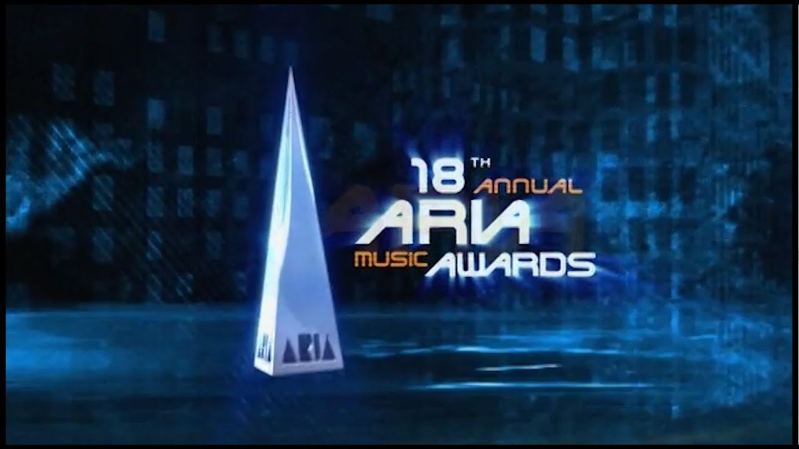
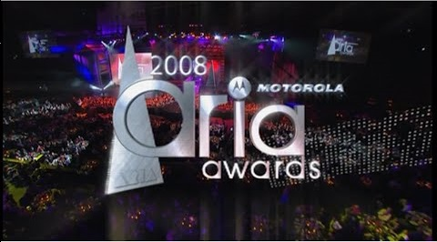
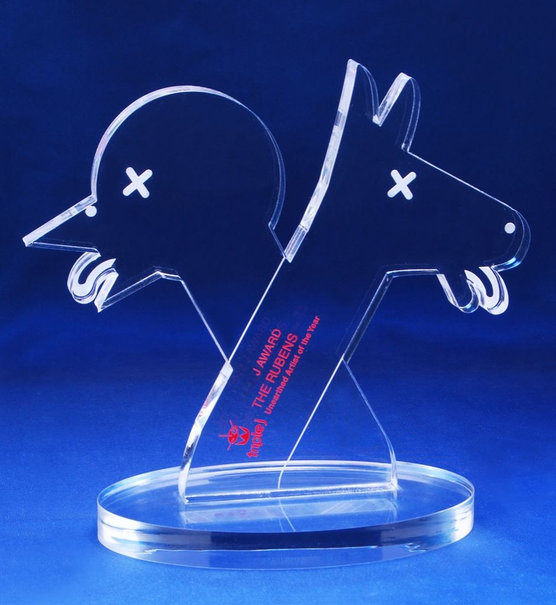
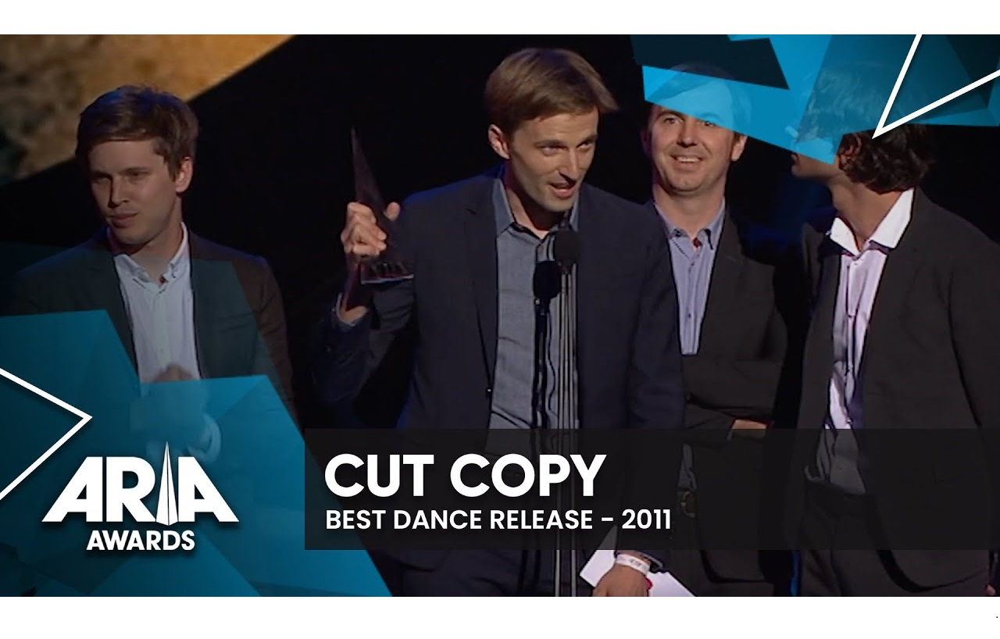

The AMC is a non-for-profit company that aims to recognise young and upcoming music groups.
Learn More
ARIA Music Awards - 2004The Australian Recording Industry Association Music Awards is an annual series of awards nights celebrating the Australian music industry, put on by the Australian Recording Industry Association.
|
 |
|  |
ARIA Music Awards - 2008The Australian Recording Industry Association Music Awards is an annual series of awards nights celebrating the Australian music industry, put on by the Australian Recording Industry Association.
|
J Awards - 2008The J Awards are an annual series of Australian music awards that were established by the Australian Broadcasting Corporation's youth-focused radio station Triple J and which are judged by the music and on-air teams from radio stations Triple J, Triple J Unearthed and Double J The awards are given in an on-air ceremony held in November each year as part of triple j's AusMusic Month.
|
 |
|  |
Aria Awards - 2011The Australian Recording Industry Association Music Awards is an annual series of awards nights celebrating the Australian music industry, put on by the Australian Recording Industry Association.
|
Grammy Award - 2012The Grammy Awards, or simply known as the Grammys, are awards presented by the Recording Academy of the United States to recognize "outstanding" achievements in the music industry. They are regarded by many as the most prestigious, significant awards in the music industry worldwide.
|